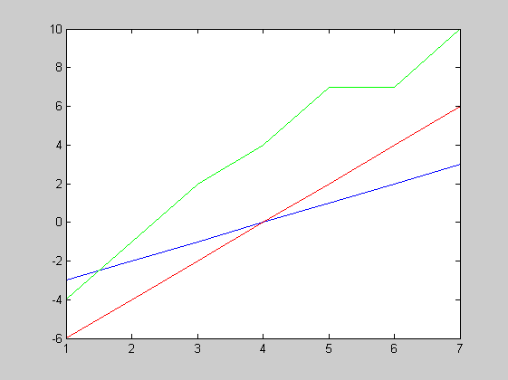
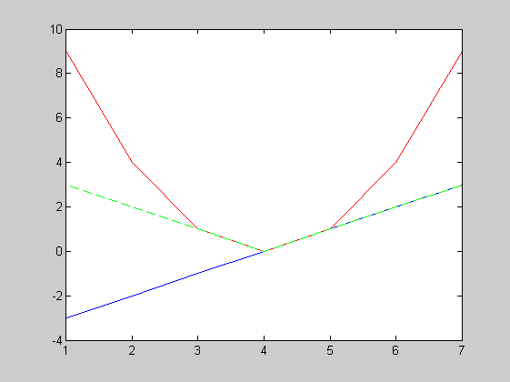
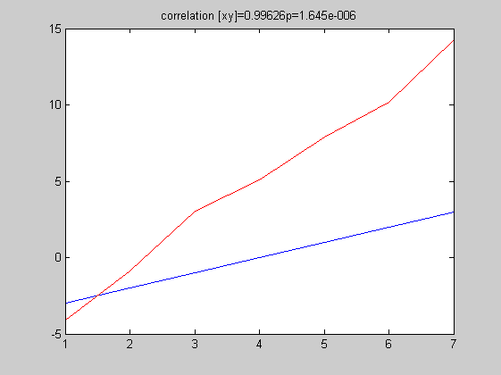
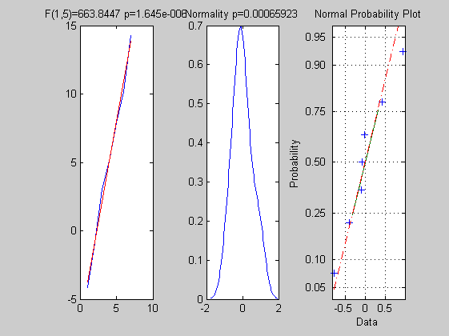
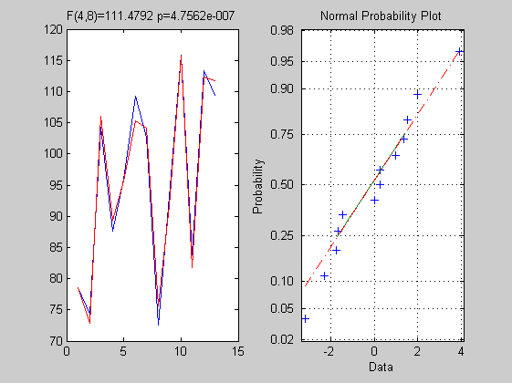

Contents
% In this first page I deal with simple and multiple regressions % To start lets' have a look a linear correlations clc clear all close all
Linear correlations
% x a simple vector of numbers x = [-3 -2 -1 0 1 2 3]; plot(x,'b') % blue line % now we multiply by 2 y = 2*x; hold on; plot(y,'r'); % red line % add we add another vector z = y + [2 3 4 4 5 3 4]; plot(z,'g'); % green line hold off % correlations are c_xy = corr([x', y']) % default is Pearson correlation c_xz = corr([x', z']) % c_yz = corr([y', z']) % % this illustrate the 2 properties of a linear system, namely % scaling y = ax % superposition y = x1 + x2
c_xy =
1 1
1 1
c_xz =
1.0000 0.9863
0.9863 1.0000
c_yz =
1.0000 0.9863
0.9863 1.0000
 Examples of non linear correlations
x = [-3 -2 -1 0 1 2 3]; plot(x,'b') % blue line % squarre the data y = x.^2; hold on plot(y,'r') % red line % take the absolute values z = abs(x); plot(z,'--g')% green line hold off % linear correlation coefficients are c_xy = corr([x', y'],'type','Pearson') c_xz = corr([x', z'],'type','Pearson') c_yz = corr([y', z'],'type','Pearson') % but non-linear correlation tells us that there is a relation c_xy2 = corr([x', y'],'type','Kendall') c_xz2 = corr([x', z'],'type','Kendall') c_yz2 = corr([y', z'],'type','Kendall')
c_xy =
1.0000 -0.0000
-0.0000 1.0000
c_xz =
1.0000 -0.0000
-0.0000 1.0000
c_yz =
1.0000 0.9608
0.9608 1.0000
c_xy2 =
1 0
0 1
c_xz2 =
1 0
0 1
c_yz2 =
1 1
1 1
 Simple regression
% In simple regression, we want to explain the data (y) by a single predictor (x) such as y = beta*x + b % It is solved by the least squares method, i.e. one looks for a coefficient (beta) that minimizes the error, % i.e. the difference between the model (beta*x+b) and the data (y). To this purpose we use the polyfit function % [p,S,mu] = polyfit(x,y,n). For a linear regression (a line) the polynome order is 1. % p = polyfit(x,y,1) ? y = p(1)x + p(2) clear all % fisrt we create a model we know + some random variations x = [-3 -2 -1 0 1 2 3]; y = 3 * x + 5 + randn(1,7); % clearly x and y are linearly correlated (x is simply scaled + cst) [r,p]=corr([y', x']); plot(x,'b'); hold on plot(y,'r'); hold off title(['correlation [xy]=',num2str(r(2)),'p=',num2str(p(2))]); % now we look for beta (i.e. about 3) and the cst term (about 5) p = polyfit(x,y,1); % we can then run the model using polyval model = polyval(p,x); figure; plot (x,y,'o',x,model); title(['y = ',num2str(p(1)),'x + ',num2str(p(2))]); % we can now look at how good the model explains % the data % fisrt test the model, i.e. evaluate if it is statistically % significant = is the model explain more the data than the error % all tests are evaluated as a ratio prediction / error df = rank(x); % we will come back on the rank function latter ss_effect = norm(model - mean(model)).^2; % the norm of the vector is it's length dfe = length(y)-rank(x)-1; % nb of observation - nb of explained variables residuals = y - model; ss_error = norm(residuals).^2; f = (ss_effect/df) / (ss_error/dfe); pval = 1 - fcdf(f, df, dfe); % plot the data and the model subplot(1,3,1); plot(y); hold on; plot(model,'r') title(['F(',num2str(df),',',num2str(dfe),')=',num2str(f), ' p=',num2str(pval)]) % plot the residuals - if y is normally distributed % the residuals are also normally distributed subplot(1,3,2); ksdensity(residuals); [H,P] = kstest(y); % do the Kolmogorov test title(['Normality p=',num2str(P)]); subplot(1,3,3); normplot(residuals); 
Multiple regression
% Again we want to explain the data (y) but this time by several predictors (x1, x2, …) such as y = beta1*x1 + beta2*x2 + b % Again this is solved by the least squares method, i.e. one looks for coefficients (betas) that minimizes the error, % i.e. the difference between (beta1*x1 + beta2*x2 + b) and y - Note that instead of a line, we will have a plan if we have % 2 regressors, a space with 3 regressors and hyperspaces when > 3 regressors % Matlab has a build in function regress that gives all we need clear load hald; Y=hald(:,5) ; X=hald(:,1:4); X = [ones(length(X),1) X]; % we simply add a column of ones for the cst term [b,bint,r,rint,stats] = regress(Y,X,0.5); % gives the solutions for all betas as well as the stats % Again we can have a look at the data, the model and the residuals subplot(1,2,1); plot(Y); model = X*b; hold on; plot(model,'r'); title(['F(',num2str(rank(X)-1),',',num2str(length(Y)-rank(X)),')=',num2str(stats(2)),' p=',num2str(stats(3))]) residuals = Y - model; subplot(1,2,2); normplot(residuals); % We could also solve this problem easily by hand: % 1. for an equation like y = ax the solution is a = y*1/x % 2. for a set a numbers in y and x the predictors betas = y*inv(X) % note that 1/X is not = to inv(X); inv(X) is a matrix such as X*inv(X)=I (I being the identity matrix) % 3. the problem here is that X is not a square matrix, and has therefore no inverse, but we can get % around it by multiplying by X' such as X'*Y = X'*X*beta and thus beta = inv(X'*X)*X'*Y % note that matrix multiplication is the sum of the product of lines per columns i.e. X'*X is a sum of squares beta = inv(X'*X)*X'*Y; % get the coeficients Yhat = X*beta; % estimated Y (model) r = Y-Yhat; % residuals ss_total = norm(Y - mean(Y)).^2; % SS total ss_effect = norm(Yhat - mean(Yhat)).^2; % SS effect ss_error = norm(r).^2; % SS error rsquare = 1 - ss_error/ss_total % fitting statistic R2 = part of explained variance f = (ss_effect/(rank(X)-1)) / (ss_error/(length(Y)-rank(X))) % F effect/error pval = 1 - fcdf(f, (rank(X)-1), (length(Y)-rank(X))) % p val
rsquare =
0.9824
f =
111.4792
pval =
4.7562e-007
 Summary
% matlab functions % correlations linear or not: [r,p]=corr(X,'type',' '); % fitting a straight line and get the model: p = polyfit(x,y,1); model = polyval(p,x); % fitting a plan/hyperplan: [b,bint,r,rint,stats] = regress(Y,X,alpha); % normality plot: normplot % % linear model % Y = betas*X + b is the general from of any linear model % the ordinary least squarre solution is given by betas = inv(X'*X)*X'*Y